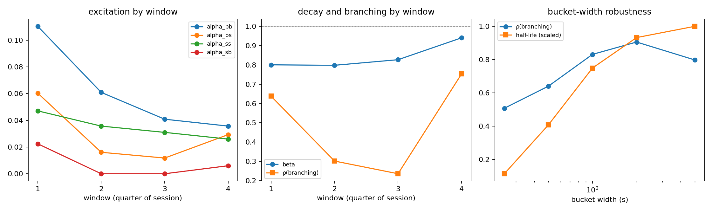
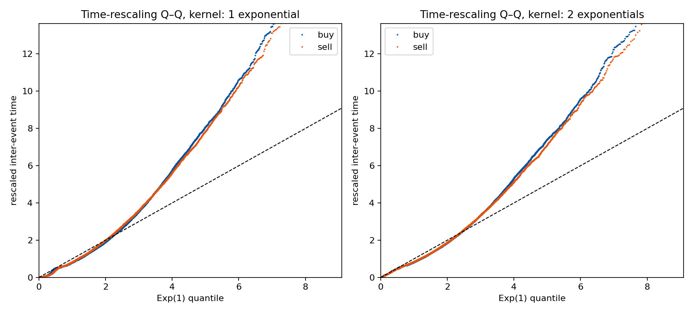
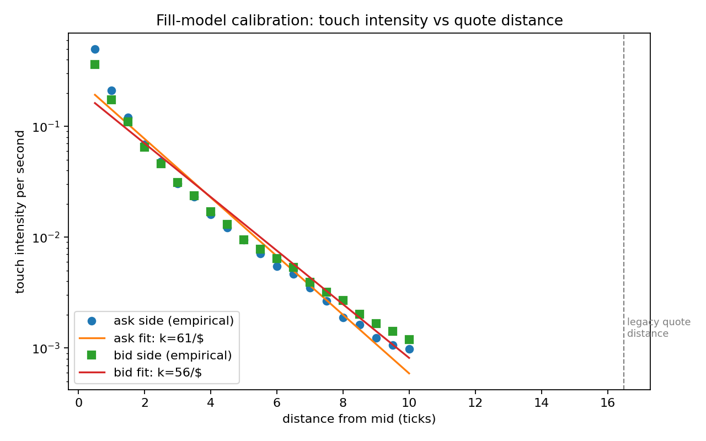
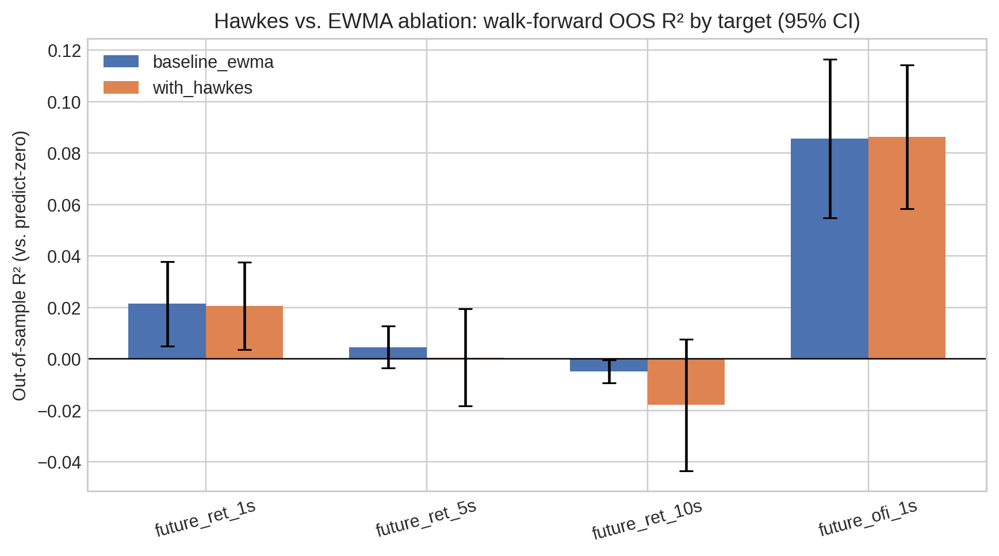
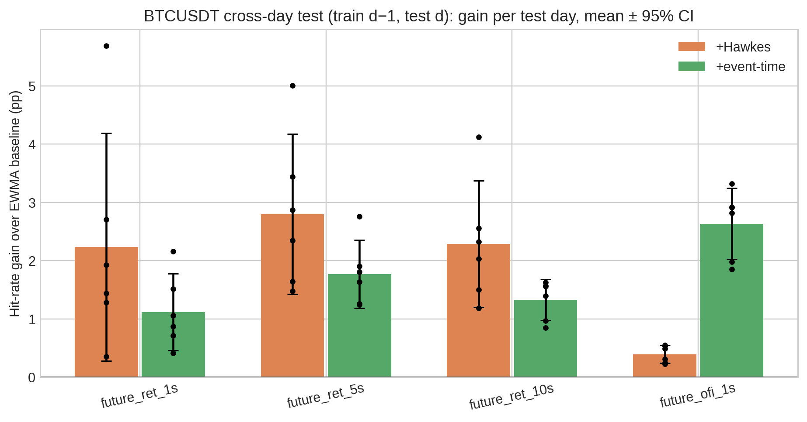

Project dossier · AAPL & BTCUSDT · 1-second order flow
Hawkes Market Maker
A bivariate Hawkes model of buy and sell trade arrivals, used as an order-flow signal inside an Avellaneda–Stoikov market maker written in C++, and tested against a plain moving-average (EWMA) baseline. This page explains every moving part from first principles, reports what the evidence does and does not support, lists the gaps found and fixed, and describes the live demo.
1Summary
The question: do Hawkes intensities, which model how trades trigger further trades, carry information about short-horizon order flow and prices that a simple EWMA of trade counts does not? And does that information help a market maker?
Trade arrivals cluster strongly, but much of the 1 s "excitation" is seasonality. On AAPL the Hawkes model beats a Poisson null by a quasi-likelihood ratio of 60,428. Its full-day branching ratio of 0.83 falls to 0.46 once the baseline follows the time of day. BTCUSDT behaves the same way (0.58–0.87, falling to 0.44–0.74). The strongest excitation is sub-millisecond, and the time-rescaling test rejects every kernel tried.
With fills replayed from real trades, the strategy loses money and Hawkes makes no difference. On AAPL it loses $930–1,800/day, and Hawkes minus baseline is +$47, CI [−26, 120]. The original $5–11k/day, and Hawkes's apparent edge, came from a parametric fill model that never charges for adverse selection. The OFI protection rules, which looked harmful under that model, actually help (+$115 to +$285).
Null on AAPL; small, consistent gains on a week of BTCUSDT. Trained on one day and tested on the next, event-time Hawkes features beat the EWMA baseline at forecasting next-second order flow on 6 of 6 days (p = 0.0006), and on 15 of 18 day×horizon return tests. The 1 s Hawkes features win 13 of 18. Gains are 1–3 percentage points of hit rate before costs.
We tested the claims ourselves and fixed what the tests exposed. Hawkes is a real, modest order-flow signal on a liquid 24-hour market. Its event-time form is more useful than the 1 s model. It does not make the current market maker profitable. The demo runs the same models live on Binance.
Section 6 lists the problems found and fixed. Several changed the answer: replaying real trades turned a profitable simulator into a losing one, a time-of-day baseline halved the branching ratio, and filtering out bid-ask bounce removed most of an apparent 8 percentage point gain.
2Data
| AAPL (primary) | BTCUSDT (cross-asset check) | |
|---|---|---|
| Source | Databento XNAS.ITCH: MBP-10 book and trades (licensed, not committed) | Binance spot aggTrades from data.binance.vision (public, no key, not committed) |
| Session | 2024-06-03, 09:30–16:00 ET (6.5 h) | 2024-06-03, 00:00–24:00 UTC |
| Events | 164,922 trades | 923,881 aggregated trades |
| 1 s rows | 23,400 | 86,400 |
| Aggressor side | Exchange flag where present (70,565 trades), else Lee–Ready on past quotes | Exact: is_buyer_maker on every trade |
| Book | Top 10 levels, sampled at each bucket's end | None in the historical file (live bookTicker stream has best bid/ask) |
| Price used | End-of-bucket midprice | End-of-bucket last trade (1-cent spread on ~$65k, so bounce ≈ 0.0015 bp) |
An "event" is not quite the same object on the two venues. A Nasdaq print is one fill, so a single marketable order that sweeps several resting orders produces several prints. A Binance aggTrade merges all fills of one taker order at one price. Binance events are therefore closer to orders, AAPL events closer to fills. This changes what self-excitation means and is one reason the two branching ratios should not be compared too literally.
3Pipeline
Steps 1–2 need raw AAPL data; their outputs are committed so everything downstream runs without it. make all runs the engine, diagnostics, sweep, plots and step 5 in about two minutes.
- step 1Feature table
MBP-10 and trades resampled to 1 s: mid, spread, microprice, L1/L10 imbalance, realized volatility, trade volumes, forward returns.
scripts/step1_build_feature_table.py → output/step1_features/
- step 2Trade signs and Hawkes fit
Signs each trade, counts buys and sells per second, computes the EWMA intensities and fits the bivariate discrete Hawkes model.
scripts/step2_trade_label_and_hawkes.py → output/step2_hawkes/feature_table_step2_1s.csv
- step 2bCausal feature table
Walk-forward Hawkes (parameters refitted every 30 min on past data, one-step-ahead intensity), trade imbalance from corrected labels, and a per-second trade file for replay fills.
scripts/step2b_causal_features.py → output/step2b_causal/
- step 3C++ quoting engine
Replays the table row by row: Avellaneda–Stoikov quotes with OFI and microprice skews, toxicity logic, inventory limit, simulated fills, PnL and markout accounting, per-tick latency.
engine/event_driven_mm_engine.cpp → bin/step3_mm → output/step3_engine_cpp/
- step 4Multi-seed sweep
24 configurations × 10 seeds, Hawkes vs baseline paired on (A, k, seed), plus an ablation with the OFI signal switched off.
scripts/step4_analysis.py, scripts/plot_graphs.py → output/step4_analysis/, plots/
- step 4bCorrected comparison
The same question with the confounds removed: replay fills from real trades, causally standardised OFI, walk-forward Hawkes. Deterministic; Newey–West CIs.
scripts/step4b_fixed_comparison.py → output/step4b_fixed/
- step 5Out-of-sample prediction (AAPL)
Walk-forward ridge regressions with and without the Hawkes features. Hawkes is refitted per training window. Paired tests on squared-error differences.
scripts/step5_alpha_signal.py → output/step5_alpha_signal/, docs/alpha_signal.md
- step 6Multi-day check (BTCUSDT)
The same fits and tests on seven BTCUSDT days: within each day, and trained on one day, tested on the next. Exports the models for the live monitor.
scripts/download_binance.py, scripts/step6_binance_validation.py → docs/binance_validation.md
- liveLive monitor
Streams Binance BTCUSDT, rebuilds the step 6 features each second, scores the models live, records the stream and serves a dashboard.
scripts/live_monitor.py, scripts/live_dashboard.html → http://127.0.0.1:8765
Side analyses: scripts/hawkes_diagnostics.py (calibration report), scripts/calibrate_fill_model.py (fill decay k from trades), scripts/benchmark_engine.py (throughput).
4Primitives
Each primitive is defined the way the code computes it, with units. Notation: buckets are 1 second, indexed by t. Row t is labelled by its bucket's start but holds the book as of the bucket's end, so everything on row t is known at time t + 1 s. Nbt, Nst are the buy- and sell-initiated trade counts in bucket t.
4.1 Book features
From the best bid and ask Pb, Pa and their sizes Vb, Va:
The microprice here is the size-weighted mid: it leans toward the side with less resting size, because that side is more likely to be depleted next. It is not Stoikov's (2018) martingale micro-price, which conditions on imbalance and spread states. Imbalance lies in [−1, 1]; positive means more resting bid size.
Realized volatility. rt = ln mt − ln mt−1, and rv_60t is the trailing standard deviation of the last 60 one-second log returns. Its unit is per √second, in log-return terms (about 6×10−5 for AAPL). The engine converts it to dollars, σ = rv_60 · m. The original code skipped that conversion, which made the inventory term about 10−5 dollars and switched inventory control off (gap E4 in docs/changes.md).
Forward returns (targets only, never features): future_ret_hst = ln mt+h − ln mt for h ∈ {1, 5, 10}. At a 1-cent tick, 48% of AAPL's 1 s returns are exactly zero.
4.2 Signing trades
Order-flow models need to know which side initiated each trade: the aggressor who crossed the spread. Three sources, in priority order:
- Exchange flag. Databento reports the aggressor as
B,AorN(unknown). Binance reportsis_buyer_maker. If the buyer was resting, a seller hit the bid, so the trade is sell-initiated; otherwise it is buy-initiated. - Quote rule (Lee–Ready). Compare the trade price with the prevailing mid. Above is a buy, below is a sell.
- Tick rule. At the mid, use the sign of the last price change.
"Prevailing" must mean strictly before the trade. The original code matched each trade to a feature row that held the book as of the bucket's end, up to one second in the future. That look-ahead, plus a regex that mapped A (sell) to unknown, gave labels that agreed with the exchange flag only 53.4% of the time: a coin flip. Fixed labels agree by construction where the flag exists, and 84.2% of quote-rule labels agree with it. Current AAPL buy share: 59.1%.
4.3 Hawkes processes
A point process is described by its conditional intensity λ(t): the instantaneous event rate given the history 𝓗t, so P(event in [t, t+dt) | 𝓗t) = λ(t) dt. A Poisson process has a constant λ: arrivals carry no memory. A Hawkes process (Hawkes, 1971) lets each event raise the future rate:
μ is the exogenous baseline rate. The kernel φ is the extra rate one past event contributes. Two consequences matter here:
- Branching ratio. n = ∫0∞ φ(u) du (here a) is the expected number of direct "children" per event. In the cluster representation, a fraction 1 − n of events are immigrants arriving at rate μ and a fraction n are triggered. The process is stationary only if n < 1, and then the mean rate is μ / (1 − n). Order-flow studies often find n close to 1 ("near-criticality").
- Markov property. With an exponential kernel, dλ = ω(μ − λ) dt + a ω dN. The intensity decays toward μ and jumps at each event. The whole history compresses into the current λ, which is what makes O(1) online updates, and a tractable state variable for optimal control, possible.
Bivariate. With buys and sells, φ becomes a 2×2 matrix: φbb (buys trigger buys, as with order splitting and herding), φsb (buys trigger sells, as with liquidity replenishment and mean reversion), and so on. The branching ratio becomes the spectral radius of the matrix of kernel integrals.
4.4 The model actually fitted
The project does not fit the continuous model above. It fits a discrete-time analogue on 1 s counts, with one decay shared by all four kernels (7 parameters):
λt is the expected count in bucket t given counts up to t−1. How to read the parameters:
- β is per-bucket persistence, not a rate. The continuous decay is ω = −ln β / Δ, and the half-life is ln ½ / ln β buckets. AAPL: β = 0.942, so ω = 0.060 s−1 and the half-life is 11.6 s. BTCUSDT: β = 0.824, half-life 3.6 s.
- An event in bucket u adds α βk−1 to the intensity k ≥ 1 buckets later, so its total offspring is α / (1 − β). The branching matrix is 𝐀 / (1 − β), not α/β, and the branching ratio is its spectral radius.
- For non-negative 𝐀, ρ(𝐀)/(1−β) < 1 ⇔ β + ρ(𝐀) = ρ(β𝐈 + 𝐀) < 1. So stationarity can be checked on the one-step companion matrix. AAPL: branching 0.831, companion 0.990. BTCUSDT: 0.761 and 0.958.
- The stationary mean is λ̄ = ((1−β)𝐈 − 𝐀)−1 μ.
Estimation. A Poisson quasi-likelihood, ℓ(θ) = Σt [Nt ln λt(θ) − λt(θ)] over both sides, maximised with L-BFGS-B (numerical gradients, bounds β ∈ [0, 0.999], α ∈ [0, 5]). It is a quasi-MLE: given the past, a bucket's count from a true Hawkes process is over-dispersed rather than Poisson. AAPL buy counts have variance/mean = 35, and 34% of buy buckets hold three or more trades. The estimator is consistent for the conditional mean but not efficient, and its likelihood-ratio statistics are diagnostic only. No stationarity constraint is imposed; stability is checked after fitting.
The OFI built from it: hawkes_ofi = (λb − λs) / (λb + λs) ∈ [−1, 1]. This "OFI" is an intensity imbalance of trades. It is not the Cont–Kukanov–Stoikov (2014) order-flow imbalance, which is built from changes in best-level queue sizes.
Step 2's λt on row t excludes bucket t's own trades, although they are known by the time row t is. The EWMA on the same row includes them. Step 5 therefore uses the one-step-ahead intensity λt+1|t = μ + β λt + 𝐀 Nt, which uses exactly the information the EWMA uses. Step 2b provides the same one-step-ahead, walk-forward intensity to the engine for the corrected comparison.
Time-of-day baseline. A constant μ cannot follow the open's burst of activity, so the fit explains it with excitation and the branching ratio drifts toward 1. Replacing μ with one value per side for each 30-minute block (AAPL) or hour (BTCUSDT) keeps 𝐀 and β shared. On AAPL that adds 24 parameters, improves the quasi-likelihood by LR = 4,150, and cuts the branching ratio from 0.83 to 0.46.
4.5 EWMA baseline
The baseline smooths counts with pandas ewm(span=60, adjust=False), so a = 2/61 ≈ 0.033:
Compare with 4.4. The EWMA is the same linear filter with μ = 0, β = 1 − a = 0.967, αbb = a, no cross-excitation, and a branching ratio of exactly 1: it is a unit-gain smoother. Its half-life is fixed at about 21 s. So the Hawkes model is an EWMA with three things fitted: a baseline, a decay, and cross-terms. That makes a mechanism easy to state. The Hawkes features can add value when the fitted decay is far from 21 s, as on BTCUSDT (3.6 s), and little when it is close, as on AAPL (11.6 s). This is a hypothesis; the test is listed under next steps.
Event-time features
The 1 s model only sees counts per bucket, but the exact fit puts most excitation below a millisecond. The event-time features work from individual trade timestamps instead. For half-lives h ∈ {0.1, 1, 10} s, with ω = ln 2 / h, each side gets
The features are the log of each side's sum and their imbalance, per scale. A linear model on them is a learned sum-of-exponentials Hawkes intensity: the ridge sets the excitation weights for the target directly, with no point-process fit.
4.6 Avellaneda–Stoikov quoting
The quoting core is Avellaneda & Stoikov (2008). Setup: the mid follows dS = σ dW. The market maker posts a bid at S − δb and an ask at S + δa. Each quote is hit by market orders at Poisson rate Λ(δ) = A e−kδ: further from mid, fewer fills. The market maker maximises CARA utility −E[exp(−γ(XT + qTST))] of terminal wealth, where X is cash and q inventory.
The value function u(t, x, S, q) solves the HJB equation
The ansatz u = −e−γx e−γθ(t,S,q), with a first-order expansion in q, gives the familiar closed forms:
Here τ = T − t. The spread has a risk part that grows with variance and horizon, and an adverse-fill part set by how fast fill probability decays with distance. Units in this repository: σ in $/√s, τ in seconds, k per dollar, γ per dollar.
Two worked numbers (γ = 0.1):
- Grid value k = 6: (1/γ) ln(1 + γ/k) = 10 · ln(1.0167) = $0.165, a half-spread of 16.5 ticks on a stock whose spread is usually 1 tick. Calibrated k ≈ 58: $0.017, or 1.7 ticks. The value of k decides whether the strategy is a real market maker or a far-away limit-order seller.
- Inventory skew with σ ≈ 6×10−5 · $193 = $0.0116/√s and τ = 60 s: γσ²τ ≈ 8×10−4 $/share, so 100 shares long moves the reservation price down by about 8 cents.
The engine replaces T − t with τ = min(60 s, seconds left), a rolling risk horizon. With a 6.5-hour session, the textbook τ would make early-day quotes absurdly wide.
4.7 Engine extensions to A–S
Per 1 s row, in this order:
- Signal. OFI = hawkes_ofi when running with
--use-hawkes, else the EWMAorder_flow_imbalance. With--ofi-standardizeit is replaced by a causal z-score (mean and variance of earlier rows only) scaled to a standard deviation of 0.2, so thresholds and skews mean the same thing for both signals. - Reservation price r = m − qγσ²τ + cofi·OFI + cμ(pμ − m), with cofi = 0.03 $ and cμ = 0.10. These two skews are hand-set, not derived.
- Half-spread from the A–S formula, floored at
min_spread_ticks·tick/2 = 1 cent. - Toxicity. Buy pressure threatens the ask. If OFI > 0.20, widen the ask by 3 ticks; if OFI > 0.45, pull it. Mirror image for the bid. The original code protected the wrong side (gap E3).
- Rounding and clamping. Round to the tick, then clamp so the bid ≤ best bid and the ask ≥ best ask: the engine never improves the inside.
- Risk. Quote a side only if one more 25-share fill keeps |q| ≤ 500.
- Fills (4.8), then accounting (4.9) and the latency timer.
4.8 Fill model
The original engine draws fills from a parametric model, kept as the default and for step 4. For the bid, at distance δ = m − bid:
The bid is filled by sell market orders, so its "pressure" is the sell intensity λs: the Hawkes intensity in Hawkes runs, the EWMA in baseline runs. Each fill is the full 25 shares, both sides can fill in the same second, and a 0.20 bp maker fee is charged. Draws come from a seeded mt19937_64, two per row (bid, then ask) whether or not a side is quoted, so a seed reproduces a run exactly.
Calibrating A, k. calibrate_fill_model.py measures how often next-second trades reach each distance from the end-of-bucket mid, and fits ln Λ(δ) = ln Λ0 − kδ. The result is k ≈ 58 per $ and A ≈ 0.066. These are touch rates, an upper bound on fills, because reaching a price level does not mean the order at the back of its queue trades.
Replay fills (--fill-model replay)
Fills come from what actually traded in the next second, so the signal cannot influence its own fills and adverse selection is real. For a bid at price P:
- A sell printed below P consumed every bid at P, ours included: a full 25-share fill.
- Sells printed at P first consume the queue ahead of us. That queue starts as the displayed size when we join at the touch and carries over while our price is unchanged (FIFO). Cancellations ahead are ignored, which makes fills late, so the model is conservative.
- Behind the touch the queue is not observed, so only trades printed through our price fill us.
There is no random draw. The remaining optimism is that a quote is assumed live for the whole next second (no latency).
4.9 Accounting
- cash, q
- A bid fill of 25 at P: cash −= 25P + fee, q += 25. Mirror image for asks.
- MTM PnL
- cash + q · m. No liquidation cost at the close.
- markout
- Per share, at horizon h (default 1 s): bid mt+h − P, ask P − mt+h. Positive means the fill was profitable. The original sign was inverted (E1).
- adverse selection
- Mid moving against the new position: max(0, mt − mt+h) × qty for buys. The original measured spread earned instead (E2).
- realized spread
- (m − Pbid) × qty for buys: the edge captured at the moment of the fill.
4.10 Evaluation machinery
Simulator (step 4)
Each configuration is run with seeds 1–10, and Hawkes and baseline share the seed, A and k. The reported statistic is the mean paired difference in final PnL with a 95% t-interval over seeds. That interval covers fill-simulation randomness only, not day-to-day market variation.
Prediction (steps 5–6)
- Walk-forward. The first 20% of rows warm up the model. The remaining 80% is cut into five contiguous test blocks, and each block's model is trained on everything before it (expanding window).
- No leakage. Features are standardised with training-fold statistics, and the Hawkes parameters are re-estimated on each training window. Tests in
tests/test_no_lookahead.pyscramble the future and assert that the past is unchanged. - Model. Closed-form ridge, β̂ = (XᵀX + α𝐈)−1Xᵀy with α = 1 (not tuned), on 9 AAPL baseline features (5 on BTCUSDT, which has no book), with and without the three Hawkes features.
- OOS R² = 1 − Σ(y − ŷ)² / Σy², measured against predicting zero: the standard benchmark for short-horizon returns, whose mean is about 0.
- Hit rate = sign agreement on rows whose target is non-zero.
- Paired loss differential dt = (y − ŷbase)² − (y − ŷhawkes)²; positive means Hawkes is better. It is tested two ways. (1) A fold-level t-test on the five fold means: conservative, 4 degrees of freedom. (2) Diebold–Mariano on all pooled rows with a Newey–West (Bartlett) long-run variance σ̂² = γ̂0 + 2Σk≤L(1 − k/(L+1))γ̂k, with lag L = horizon + 10. Overlapping 5 s and 10 s targets make a plain pooled t-test badly over-confident.
- Cross-day test (BTCUSDT). Hawkes parameters and ridge coefficients are fitted on day d−1 and applied unchanged to day d. Each test day contributes one mean loss differential. Days are close to independent, so a plain t-test across the six test days is valid, though it has little power.
- Bid-ask bounce. BTCUSDT is priced by its last trade. 88% of its non-zero one-second moves are exactly one tick, which is the bounce between bid and ask. A sign hit on a bounce predicts which side traded last, not where the price went, so BTCUSDT hit rates count only moves larger than 1.5 ticks. The squared-error tests weight by size and are not affected.
- Multiple testing. Four targets per instrument, so Bonferroni p < 0.0125. robust means both tests clear it, suggestive means either is below 0.05, and null otherwise.
5Results
5.1 Hawkes calibration
| Diagnostic | AAPL (1 day) | BTCUSDT (7 days, range) | Reading |
|---|---|---|---|
| β / half-life | 0.942 / 11.6 s | 0.80–0.90 / 3.2–6.8 s | Crypto flow forgets two to three times faster |
| Branching ratio, constant μ | 0.831 | 0.58–0.87 | Mostly endogenous, on both |
| Branching ratio, time-of-day μ | 0.457 | 0.44–0.74 | A large part was seasonality |
| Companion radius ρ(β𝐈 + 𝐀) | 0.990 | 0.92–0.98 | Stable |
| Buy buckets with ≥ 3 events | 33.8% | 24–42% | The 1 s Poisson approximation is rough |
| Quasi-LR vs Poisson / vs no-cross | 60,428 / 3,461 | — | Clustering and cross-excitation both matter |
| Branching in four intraday windows | 0.24–0.75 | — | Parameters move through the day |
| Exact event-time fit (3 exponentials) | 28 µs, 0.65 ms, 0.17 s | — | The dominant excitation is sub-millisecond |
| Time-rescaling KS test | p ≈ 0 for all kernels | — | Descriptive model, not a correct one |


5.2 Fill-model calibration
The fitted decay is k ≈ 58 per dollar, against the 4–8 assumed in the original sweep. At the grid's ~16-tick quote distance, the parametric model gives thousands of times more fills than the data support. At the calibrated point it quotes ~1.7 ticks from mid and reports about $200–260/day. Replaying real trades through the same quotes gives about −$930/day (5.3). The parametric number is not reliable, at any calibration.

5.3 Simulator: Hawkes vs baseline
The corrected comparison (step 4b) removes the walk-forward, scaling and fill-model confounds (gaps O1–O3, O5, O9 in section 6). AAPL 2024-06-03; deterministic runs; 95% CIs are Newey–West (lag 300 s) on per-second PnL increment differences.
| Configuration (replay fills) | Hawkes $ | Baseline $ | Hawkes − baseline | OFI rules on − off (Hawkes) | Markout ¢/share, 1 s |
|---|---|---|---|---|---|
| Calibrated, k = 58 | −931 | −978 | +47 [−26, 120] | +115 [19, 210] | −0.7 |
| At the touch, k = 200 | −1,485 | −1,489 | +4 [−78, 87] | +285 [179, 392] | −0.6 |
| Legacy default, k = 6 (10 fills all day) | −4 | −4 | 0 | −0.3 [−0.7, 0.2] | +0.2 |
The market maker loses money once fills reflect what actually traded. Its fills are adversely selected: a quote gets hit when the price is about to move through it. Hawkes and baseline quoting cannot be told apart. The OFI rules (widen or pull the threatened side) now reduce losses. Under the old parametric model they looked harmful only because fills were drawn independently of later price moves, so stepping out of the way could never pay.
5.4 Out-of-sample prediction
AAPL, one day (walk-forward within the day)
| Target | R² base | R² +Hawkes | +Hawkes verdict | R² +event-time | +Event-time verdict |
|---|---|---|---|---|---|
| 1 s return | 0.0214 | 0.0207 | null | 0.0123 | suggestive, EWMA better |
| 5 s return | 0.0046 | 0.0005 | null | −0.0221 | suggestive, EWMA better |
| 10 s return | −0.0049 | −0.0179 | suggestive, EWMA better | −0.0609 | suggestive, EWMA better |
| Next-second flow imbalance | 0.0857 | 0.0863 | null | 0.0895 | suggestive, event-time better |
BTCUSDT, seven days
Trained on one day, tested on the next: six independent test days. "Days better" counts days on which the alternative had the lower squared error. Hit-rate gains count only moves larger than the bid-ask bounce.
| Target | +Hawkes days better | p across days | Hit gain | +Event-time days better | p across days | Hit gain |
|---|---|---|---|---|---|---|
| 1 s return | 4 / 6 | 0.090 | +2.2 pp | 5 / 6 | 0.030 | +1.1 pp |
| 5 s return | 5 / 6 | 0.059 | +2.8 pp | 5 / 6 | 0.016 | +1.8 pp |
| 10 s return | 4 / 6 | 0.20 | +2.3 pp | 5 / 6 | 0.024 | +1.3 pp |
| Next-second flow imbalance | 5 / 6 | 0.35 | +0.4 pp | 6 / 6 | 0.0006 | +2.6 pp |
Reading. On BTCUSDT, Hawkes-type features carry information the EWMA lacks, consistently across a week. The clearest result is the event-time features forecasting next-second order flow. The return effects are small and do not clear a strict multiple-testing bar with only six test days. On AAPL there is no effect. The gap between instruments is not explained by the weaker BTCUSDT baseline.


5.5 Engine benchmark
About 127,000 rows/s including CSV parsing and writing, with a median per-tick latency of 0.07 µs at p50 and 0.14 µs at p99, and no latency-budget breaches (AMD Ryzen 9 7940HS, make bench). This times the arithmetic of one 1 s row. It says nothing about network or exchange latency, which is where real market-making latency lives.
6Gaps audit
This audit covers the code and the reasoning behind each claim. Earlier fixes to the original repository, such as the markout sign, the adverse-selection definition, the toxicity side, the volatility units and the label look-ahead, are recorded in docs/changes.md and not repeated here.
Fixed
| # | Problem | Fix | What it changed |
|---|---|---|---|
| High severity | |||
| O1 | Engine used stale λt fitted on the whole day | Step 2b: refitted every 30 min on past data, one-step-ahead λt+1|t | Walk-forward branching rises 0.47 → 0.81 through the day: the full-day fit leaked the future |
| O2 | One ±0.2 threshold for signals with sd 0.10 and 0.21 | Engine --ofi-standardize: causal z-score scaled to sd 0.2 | Thresholds now mean the same thing in both modes |
| O3 | Hawkes intensity drove its own fill rate | Engine --fill-model replay (fills from real trades); --pressure-source ewma for the parametric check | Hawkes's simulator edge disappears: +47 [−26, 120] |
| O4 | One day per instrument, no holdout | 7 BTCUSDT days with a cross-day test; holdout week recorded and enforced (config/holdout.json) | BTCUSDT gains replicate across days. AAPL stays one day (needs a purchase) |
| Medium severity | |||
| O5 | No queue position, full fills, touches as fills | Replay with FIFO queue at the touch and partial fills | Strategy goes from +$260 to −$930/day; latency and cancellations are still not modelled |
| O6 | Constant baseline read seasonality as excitation | Time-of-day μ (fit_discrete_tv) | AAPL branching 0.83 → 0.46; BTCUSDT 0.58–0.87 → 0.44–0.74 |
| O7 | 1 s buckets blind to millisecond excitation | Event-time multi-scale features from trade timestamps | Best BTCUSDT result: next-second flow, 6/6 days, p = 0.0006 |
| O8 | AAPL trade_imbalance from legacy labels | Rebuilt from corrected labels in steps 2b and 5 | Mean moves 0.34 → 0.14; AAPL conclusions unchanged |
| O9 | Hand-set queue-haircut constants | Not used by replay fills; queue handled explicitly | Only the legacy parametric model still has them |
| Found during the fixes | |||
| F1–F7 | In-sample Hawkes in step 5, stale timing, naive pooled t-test, zero returns counted as misses, BTCUSDT VWAP price, meaningless flow "PnL", stale doc numbers | Per-fold refit, λt+1|t, Diebold–Mariano HAC + Bonferroni, non-zero hit rate, last-trade price | Earlier BTCUSDT claims corrected; the timing fix strengthened the effect |
| F8 | 88% of BTCUSDT 1 s moves are a one-tick bounce | Hit rates count moves > 1.5 ticks only (offline and live) | Event-time 1 s "gain" falls from +8.5 to +1.1 pp |
| F9 | Live features drifted from offline ones (epoch-seconds precision) | Session-relative clock; a parity test now asserts live = offline | Live scores use exactly the trained features |
Still open
| # | Severity | Gap | Fix |
|---|---|---|---|
| R1 | medium | AAPL is one day; no AAPL holdout | Buy more Databento days (ask first) |
| R2 | medium | Replay ignores latency and cancellations ahead in the queue | MBO data for exact queue position; a latency parameter |
| R3 | medium | The engine quotes once per second, so event-time information is unused in quoting | Sub-second, event-driven engine |
| R4 | low | Time-of-day baselines are fitted on the day they describe | Profile from earlier days |
| R5 | low | Ridge with α = 1, untuned and linear | Nested CV for α; one tree model as a check |
| R6 | low | Step 4's ad hoc "best config" score; regime tertiles from the full day; AAPL step 2 labels regenerated without raw data | As listed in docs/changes.md |
On an HJB + Hawkes controller
A natural next step is to make λb, λs state variables of the market maker's HJB, as in Cartea, Jaimungal & Ricci, instead of bolting the OFI on as a skew. The most relevant recent paper, Jain, Firoozye, Kochems & Treleaven (arXiv:2510.26438, 2025), writes the HJB quasi-variational inequality for a Hawkes order book. It finds no closed form, its Deep Galerkin solver does not converge on the full model, and it reports results from a PPO agent in its own simulator. Those results use no real data, no Avellaneda–Stoikov baseline and no confidence intervals. The forecasting effect is a few percentage points, consistent across a week of one instrument and absent on the other, and the current quoting loses money once fills are real. A controller built on that signal is premature. A sub-second engine and more days come first.
7Live demo
Built and running. make live streams BTCUSDT from Binance's public feed and runs the step 6 models on it. It scores them each second and serves a dashboard at http://127.0.0.1:8765. No keys, no orders.
What it does
- Collects the
aggTradeandbookTickerstreams over one WebSocket, reconnecting with backoff. - Closes each second on the exchange clock, 300 ms after it ends, so late trades still land in the right bucket.
- Rebuilds the exact training features: span-60 EWMA, the one-step-ahead Hawkes intensity with the parameters fitted offline, event-time decayed counts, 60 s realized volatility and trade imbalance. A test asserts these match the offline pipeline to 10−9.
- Predicts the next second's return with the baseline, +Hawkes and +event-time ridge models from
output/step6_binance_validation/live_model.json. It scores each forecast when that second closes, which makes it a genuinely out-of-sample version of step 6. Hit rates ignore one-tick bounces, as offline. - Paper P&L (option 1). Each model holds $10,000 long or short by the sign of its forecast, trades only when the sign flips, and pays the 10 bp standard taker fee. Over 6 out-of-sample days offline (
make taker), every model makes +$20–21k gross but loses $3–4M net. The break-even fee is 0.05–0.07 bp, about 150× below the real fee. The forecasts have an edge, and fees make it worthless to a taker. A paper market maker (option 2) is planned inplan.md§8a. - Records to
data/live/<date>/: the trades in Binance's historical format, plus the best bid/ask each second, which the historical files lack. Each live session becomes a new test day with a real order book.
How to run it
# once: install the optional websockets dependency and build the models uv sync --frozen --group live make validate-binance # live (needs network access to stream.binance.com:9443) make live # no network: replay a downloaded day through the same code path at 20x make live-replay
Verified on 2026-11-17: connected, collecting about 10 trades per second, scoring after the 60 s warm-up, and recording. The page has no external dependencies, so it works offline in replay mode. It has to run locally: hosted pages block outbound WebSockets.
Presenting it
- Over a few minutes the scoreboard is noise: a few hundred real moves give a ±6 pp interval. Say so. The evidence is the 7-day cross-day test, and the live page shows the same models working on today's market.
- If the venue blocks Binance, use
make live-replay. - Live AAPL is not possible without a paid feed. Real orders are excluded by the project's ground rules.
Suggested five-minute walkthrough
- One command reproduces everything (
make all,make test). - Clustering is real but half of it is seasonality (5.1).
- The simulator story reverses once fills are real (5.3).
- The forecasting test: null on AAPL, consistent small gains on BTCUSDT (5.4).
- The live dashboard.
8Reproduce
Needs uv, g++ (C++17) and make.
# pinned Python 3.12 environment uv sync --frozen # ruff + 41 tests (builds bin/step3_mm) make test # engine, diagnostics, steps 4, 4b and 5, plots (~3 min) make all # step 6 on 7 BTCUSDT days: downloads ~550 MB once, then ~6 min make validate-binance # live dashboard (needs uv sync --frozen --group live) make live
Raw AAPL data is licensed and not in the repository. Steps 1–2 run only if it is present in data/databento/ (see data/README.md); otherwise the committed outputs are used.
9Glossary
- aggressor
- The side that crossed the spread with a marketable order. A buy-initiated trade lifts the ask.
- branching ratio
- Expected direct offspring per event. Below 1 is stationary; close to 1 is near-critical.
- companion matrix
- β𝐈 + 𝐀, the one-step map of the discrete intensity. Its spectral radius must be below 1.
- Diebold–Mariano
- A test of equal forecast accuracy on the loss differential, using a variance that allows for autocorrelation.
- markout
- Profit of a fill measured against the mid a fixed time later.
- MBP-10
- Market-by-price, 10 levels: aggregated size at each of the best 10 prices per side.
- MBO
- Market-by-order: every individual order. Needed to reconstruct queue position.
- OFI (here)
- Intensity imbalance (λb − λs)/(λb + λs). Not the Cont–Kukanov–Stoikov book OFI.
- quasi-MLE
- Maximising a likelihood known to be misspecified, here Poisson for over-dispersed counts. It is consistent for the mean, but its likelihood-ratio tests are not exact.
- reservation price
- The price at which the market maker is indifferent to one more unit of inventory: S − qγσ²τ.
- time-rescaling
- If the model is right, the compensator increments between events are i.i.d. Exponential(1). The KS test and Q–Q plot check this.
- walk-forward
- Train on the past, test on the next block, roll forward. The model is never tuned on the block it is scored on.